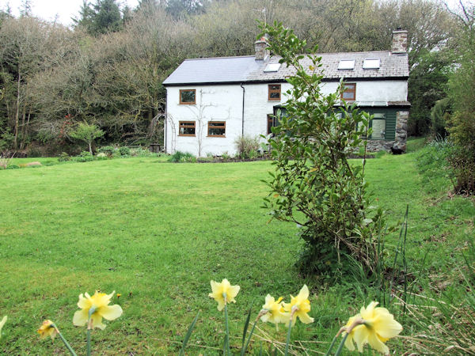

“Old beams, limewashed stone walls and a fireplace alongside modern features, all set in a mature garden to complete this smallholding’s wholesome character”

Ty Newydd Farm is a 5 acre holding comprising a characterful detached 3 bed stone cottage, a modern cabin, a small yard with useful outbuildings gardens, vegetable plot, woodland and land suited to poultry, pigs etc. The property is in a quiet and private location but lies just a mile or so outside the town.
An adjacent cycle track gives access to the town and continues on, eventually leading to the Millennium coastal path. By road, Llanelli and Carmarthen are only 20 minutes or so away, Swansea 30 minutes and junction 48 of the M4 just 15 minutes.
The cottage has recently been upgraded to have internal wall insulation, central heating and hot water from a airsource heatpump, with solar panels and a battery for storage.
Interested in this ideal smallholding?
The grand tour
Walking into the main entrance porch, with tiled floor and enter through a split cottage door, to the left is a cloak room with hand wash basin, WC, and window to the rear.
Ground floor
The kitchen is fitted with a range of natural wood base and wall units, 1½ bowl stainless steel sink, wood fired Esse range, plumbing for washing machine and dishwasher, window to side, window to rear and 2 windows to front, part tiled walls.
Dimensions 4.65m max x 4.6m (15’3 x 15’2)
The black-beamed living room is divided by the wooden stairs, which conceals a spacious cupboard, and is light filled from a skylight above. The tile floored dining space on one side offers room for a large table, and storage.
The snug has a multi-fuel stove in stone chimney, an alcove for a bookcase, space for a large sofa, part tiled floors, 2 windows to front.
7.3m max x 4.1m max (24’ x 13’5)
Wooden framed conservatory with dwarf stone wall, tiled floor, double doors to garden.
5.25m x 2.05m (17’3 x 6’9)
First floor
The master bedroom has exposed ‘A’ frame timbers, wood panelling, 2 roof lights, window to front.
4.1m x 3.5m (13’5 x 11’6)
The landing consists of two alcove linen cupboard spaces, and a bright, light space that has previously been used as a small walk-thru study space room with exposed ‘A’ frame, window to front, roof light.
2.25m x 2.25m (7’4 x 7’4)
The upstairs bathroom is bright with a white 3 piece suite, part tiled walls, electric shower over bath, towel rail and roof light.
Second bedroom, currently used a homeworking office space, has wood flooring, roof light, window with terrific views of the property and countryside beyond. Cupboard contains the hot water cylinder.
4.55m max x 2.55m (14’11 x 8’4)
Snug small third bedroom has wood flooring, window to front, sloping ceiling to one side.
3.45m x 2m (11’4 x 6’7)
Outside
The property is approached from a country lane via a gated access that leads into a large parking area with room to park and turn several vehicles. Here there is a large car port.
From the parking area, there is further gated access to the yard and outbuildings.
To the front and side of the house there are wild gardens planted in a Piet Oudolf style of mixed native wild plants. To the rear of the house, a small stream runs and beyond that the land rises to a tree lined boundary.
The yard and buildings
There is good vehicular access to the yard and the buildings stand on either side of this. These include: WORKSHOP of timber and block construction with steel frame and measuring approx. 9.25m x 5.3m (30’ x 17’4). It has a concrete floor and power and lighting connected. There are full height double doors.
To one side stands an ALUMINIUM GREENHOUSE 3.65m 2.4m (12’ x 8’), to the other side stands a POLY TUNNEL with productive grape vine. Behind the poly-tunnel is a borehole providing water for irrigation.
Opposite stands a former stable block of timber construction, currently divided into two, each measuring 3.55m x 3.45m (11’9 x 11’4) used as a sheep pens, and a storage including chest freezer.
The Cabin
A modern built cabin, well insulated with steel roof, extensive glazing, and three roof lights. Currently used as a large home studio, with guest bedroom. Potential to be turned into a full connected annex or holiday let accomodation with the relevant permissions.
9.25m x 5.3m (30’ x 17’4)
The great outdoors
From the yard there is access to about half of the land. This includes the vegetable plot with raised beds, shade tunnel, fruit cage and log store, a small wildlife pond, poultry and duck enclosures with pond and an open wildlife area. Beyond the chicken field and pond are two small paddocks which have been used for pigs and sheep in the past.
The remainder of the land lies across the cycle track which runs down one boundary. This land comprises mainly woodland although there is an enclosure where pigs were kept previously.
There is a variety of woodland, some old and mature, some more recently planted and including flowering shrubs (as a habitat in which to keep bees) and some planted to produce fuel.
The Pod
In a clearing in the woods stands a small pod, currently used as an even quieter retreat when the smallholding is busy, for reading on the raised deck, and birdwatching.
The cycle track runs along the course of an old mineral railway and has recently been surfaced with tarmac to provide excellent cycling and walking. In one direction the track runs to Tumble, in the other it runs all the way to Llanelli where it joins the Millennium Coast path, offering miles of cycling or walking. The cycle track is maintained by Sustrans and is closed to vehicles.
It is just a 10 minute walk along the cycle track to Tumble’s shops, including pharmacy, vet, butchers, and post office, as well as bus stops.
Out and about
The property is ideally located to explore the south coast of Wales, with the beautiful beaches of The Gower within easy distance, and the Tenby, Cardigan and St Davids within day tripping distance.
Services
Mains electricity. Private drainage and water. Air source heat pump for heating and hot water. This smallholding offers the opportunity for remote and home-workers to be fully connected, with 5G broadband, and links to the Cabin via underground fibre.